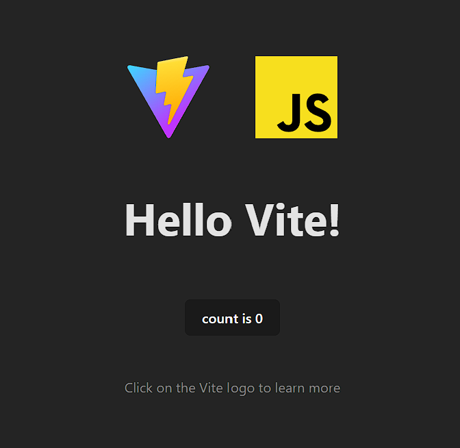
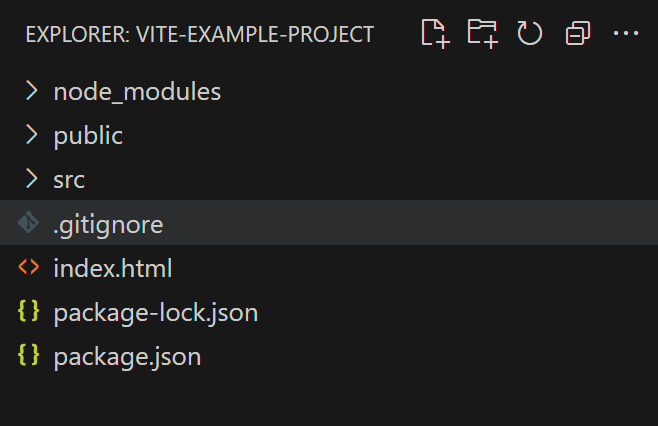
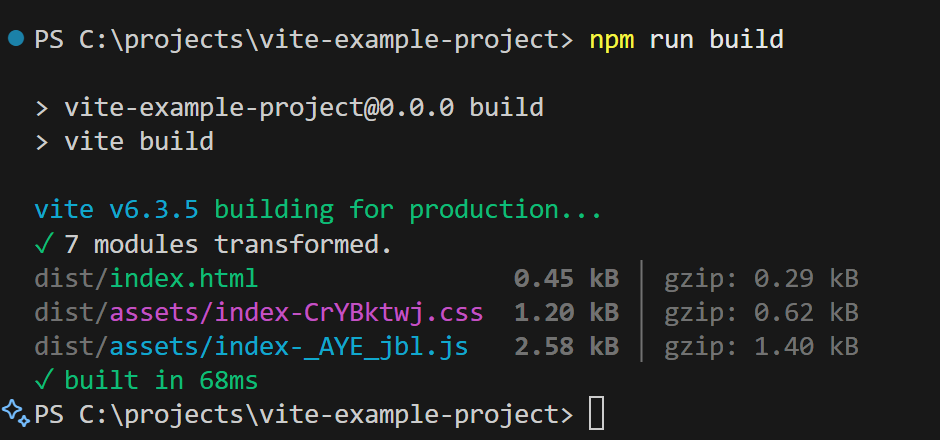

S06 – Projeto: Final S06: Início – Ferramenta de Compilação Vite
Visão Geral
O Vite é uma ferramenta de compilação para auxiliar no desenvolvimento de aplicações web. O Vite foi a ferramenta usada no projeto de aprendizagem em equipe SleepOutside. Este guia ajudará você a começar a construir sua aplicação web final e individual usando o Vite.
Guia Passo a Passo para Começar
Node.js
Node.js é necessário para usar a ferramenta de compilação Vite.
- Verifique sua versão do Node.js executando o seguinte comando no seu terminal:
O número da versão deve ser 18+.node -v
Se necessário, você pode atualizar o Node.js executando o seguinte comando no seu terminal:npm install -g node@latest
Se você não tiver o Node.js instalado corretamente, poderá baixá-lo no site oficial: Downloads do Node.js
Inicializar o Projeto
- Inicialize o projeto usando o vite digitando o seguinte comando no seu terminal:
Isso criará um novo projeto Vite no diretório atual.npm create vite@latest - Serão solicitadas as seguintes informações:
- Confirmação para instalar o pacote Vite. Você verá uma mensagem semelhante à seguinte:
Pressione a sua Enter tecla ou digite y e pressione Enter.Need to install the following packages: create-vite@x.x.x Ok to proceed? (y)
O valor entre parênteses (y) é a entrada padrão. - Será solicitado o Nome do Projeto:. Digite um nome que seja semântico e conciso. Este será o nome da pasta que será criada para o seu projeto.
- Em seguida, Selecione um framework: que deseja usar. Para este projeto, selecione Vanilla.
- Em seguida, Selecione uma variante: que deseja usar. Para este projeto, selecione JavaScript.
- Uma mensagem aparecerá dizendo algo como
seguido pela localização (pasta raiz e pasta do nome do projeto) que você selecionou.Scaffolding project inDone. Now run:
- Confirmação para instalar o pacote Vite. Você verá uma mensagem semelhante à seguinte:
Instalar Dependências e Iniciar o Servidor de Desenvolvimento
- Mude de diretório para a pasta do projeto que você acabou de criar digitando o seguinte comando no
seu terminal:
onde <project-name> é o nome da pasta que você criou na etapa anterior.cd <project-name>
Não inclua a sintaxe < e > no nome do seu projeto. - Instale as dependências digitando o seguinte comando no seu terminal:
npm install - Inicie o servidor de desenvolvimento digitando o seguinte comando no seu terminal:
npm run dev - Sua aplicação Vite será iniciada e um servidor de desenvolvimento local (localhost) será aberto no seu navegador padrão.
Navegue até a URL do localhost fornecida.

Captura de tela de um exemplo do servidor de desenvolvimento Vite no navegador - No seu terminal, feche o servidor de desenvolvimento pressionando Ctrl + c (PC) ou Command +
c (Mac) no seu teclado. Será solicitado que você confirme se deseja encerrar a tarefa em lote.
Digite y e pressione Enter.
Isso interromperá o servidor de desenvolvimento e o diretório atual do projeto será exibido no prompt.
Abrir o Projeto no VS Code
- Abra o projeto no Visual Studio Code (VS Code) digitando o seguinte comando no seu terminal:
code .O ponto (.) no final do comando é importante. Ele diz ao VS Code para abrir o diretório atual.
Você também pode apenas iniciar o VS Code e abrir a pasta do projeto diretamente.
- No VS Code, você verá uma estrutura de pastas semelhante à seguinte:

Captura de tela de um exemplo da estrutura de pastas do projeto Vite no VS Code
Gere a compilação da aplicação para produção
- No terminal do VS Code ou no terminal de sua escolha, execute o comando de compilação para abrir o index.html arquivo na src pasta. Você verá uma
página HTML simples com o logotipo do Vite e um link para a documentação do Vite.

Captura de tela de um exemplo do arquivo index.html do Vite no VS Code - Uma nova pasta chamada dist é adicionada à pasta do seu projeto.
É isso! Agora você está pronto para começar a construir sua aplicação web.